作業の開始
RHACS OperatorをACSと想定してインストールし、その後ワークショップのサンプルとなる小さなデモをインストールします。
RHACS Operatorのインストール
-
Operator Hub から Advanced Cluster Security Operator を検索します。
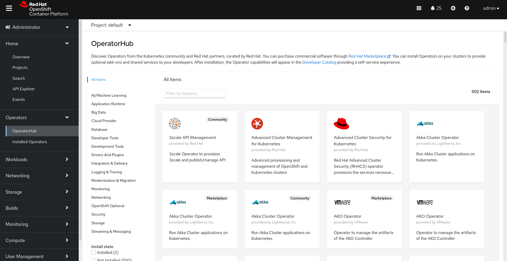 -
Installボタンをクリックして、選択したオペレーターをインストールします。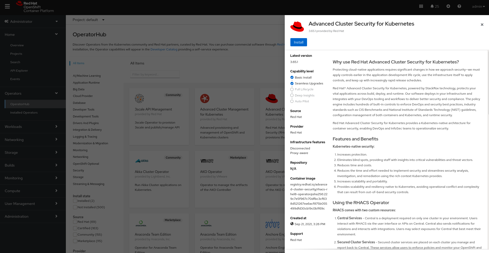 -
インストール パラメータを確認します。
-
rhacs-3.70channel -
rhacs-operatornamespace -
Automaticupdate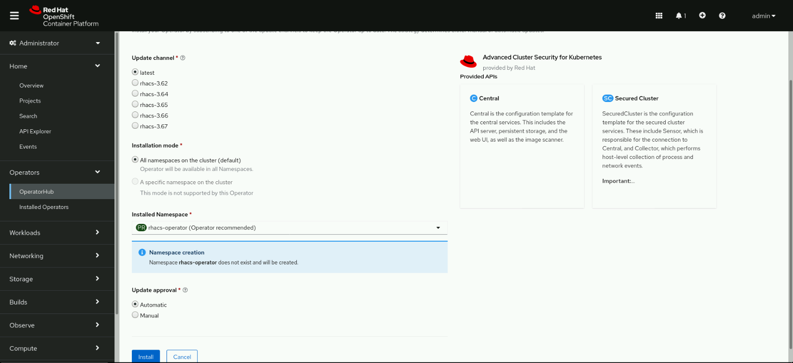
-
-
完了するまで待ちます。インストールには数分かかります。
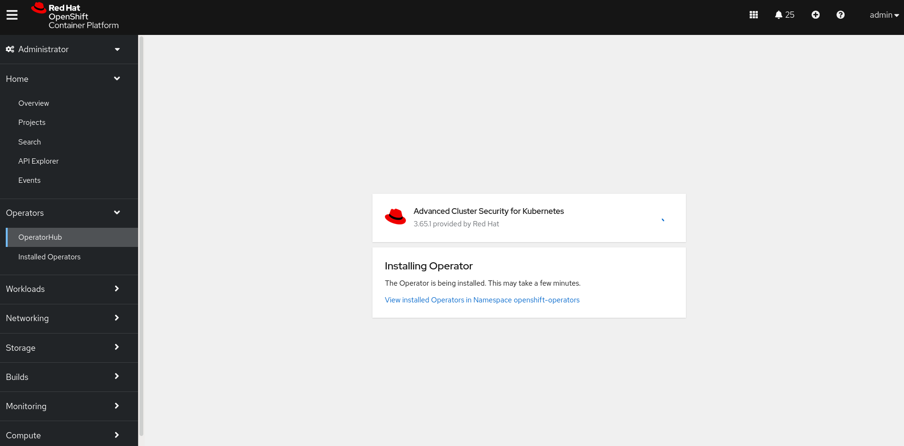 -
View Operatorボタンをクリックして、準備完了のオペレーターにアクセスします。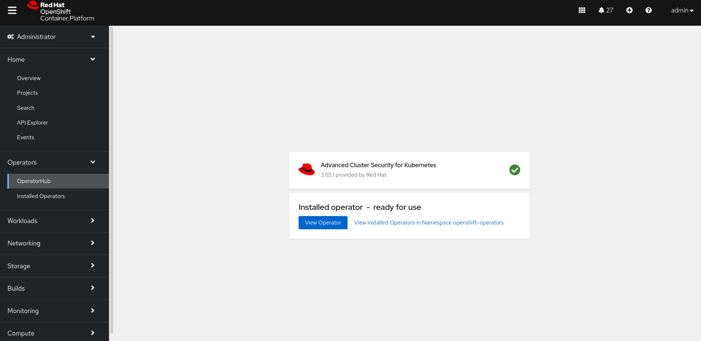
RHACS Central Clusterのインストール
このセクションでは、Central コンポーネントをラボ クラスタにデプロイします。Central は、次の 2 つの主要なデプロイメントで構成されています。
-
The
centralサービスは、API とコンソールを公開し、セキュリティで保護されたクラスター上のセンサーと通信します。 -
The
scannerサービスは、デプロイされたPodsのイメージをスキャンする役割を持ちます。
OpenShift クラスターにログインし、新しい stackrox namespace を作成します (次のように Web コンソールまたは cli を使用します)。ここにコンポーネントをインストールします。
oc new-project stackrox次に、ACS Central で管理者ユーザーが使用するパスワードを使用してシークレットを作成します。このSecretは、後で ACS Central を作成するときに指定します。
この作業は必須ではありませんが、このワークショップの後のラボでは、acs-password をSecretにして、stackrox を管理者パスワードとして設定する必要があります。
| Secret を指定せずに Central を作成すると、管理者ユーザーのパスワードとしてランダムな文字列が設定されます。 |
oc create secret generic acs-password --from-literal=password=stackrox -n stackrox次に、Central を作成しましょう。以下は、Centralのカスタム リソースの例です。これは、Web コンソールまたは CLI の 2 つの方法で行うことができます。
apiVersion: platform.stackrox.io/v1alpha1
kind: Central
metadata:
name: stackrox-central-services
namespace: stackrox
spec:
central:
exposure:
loadBalancer:
enabled: false
port: 443
nodePort:
enabled: false
route:
enabled: true
adminPasswordSecret:
name: acs-password
persistence:
persistentVolumeClaim:
claimName: stackrox-db
egress:
connectivityPolicy: Online
scanner:
analyzer:
scaling:
autoScaling: Enabled
maxReplicas: 5
minReplicas: 2
replicas: 3
scannerComponent: EnabledWeb コンソールの利用
-
Operatorの ready screen から
View Operatorをクリックするか、Operators → Installed Operators ページに移動してください。次に、Provided APIs セクションで、CentralAPI のCreate Centralを選択します。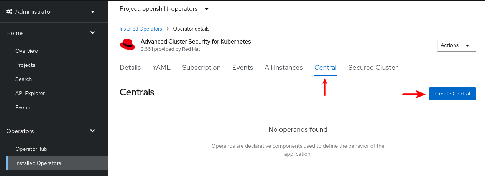 -
YAMLラジオボタンをチェックし、下に表示されているCentralCR を貼り付けてCreateボタンをクリックします。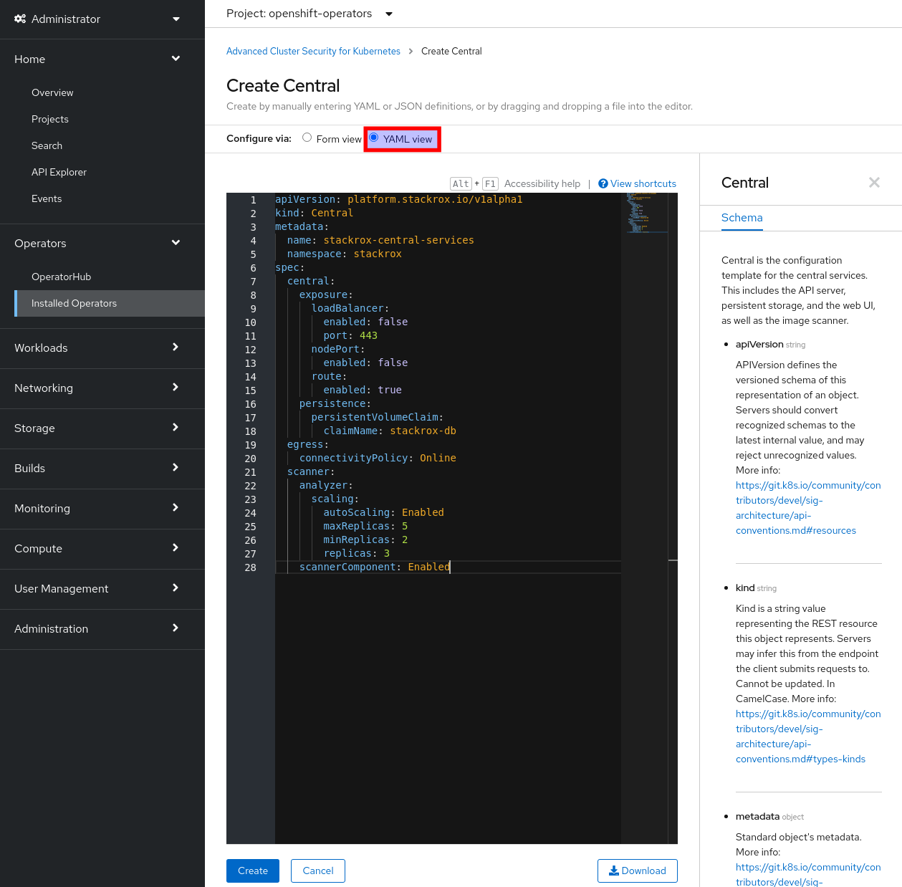 -
メニューの
TopologyでDeveloperパースペクティブに切り替えると、進行状況を確認することができます。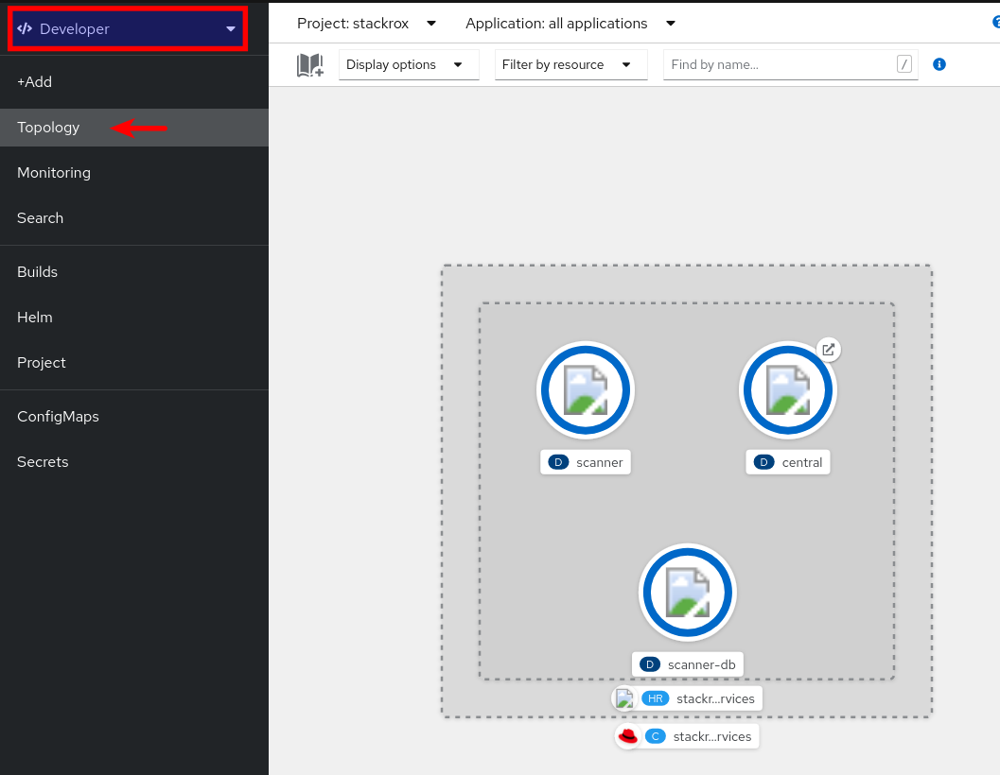
また、Developerのパースペクティブを使用しても同様のことが可能です。
-
選択した
stackrockプロジェクト内で、 +Add → Import YAML を実行します。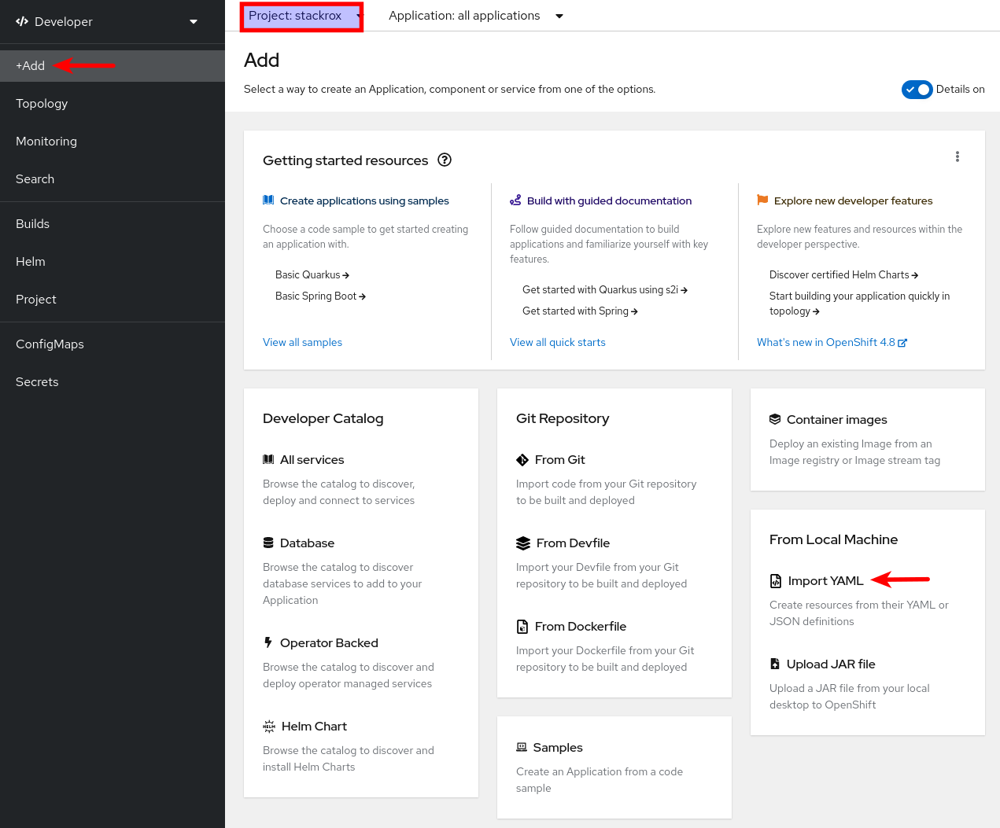 -
YAML コンテンツを貼り付けて、
Createボタンをクリックします。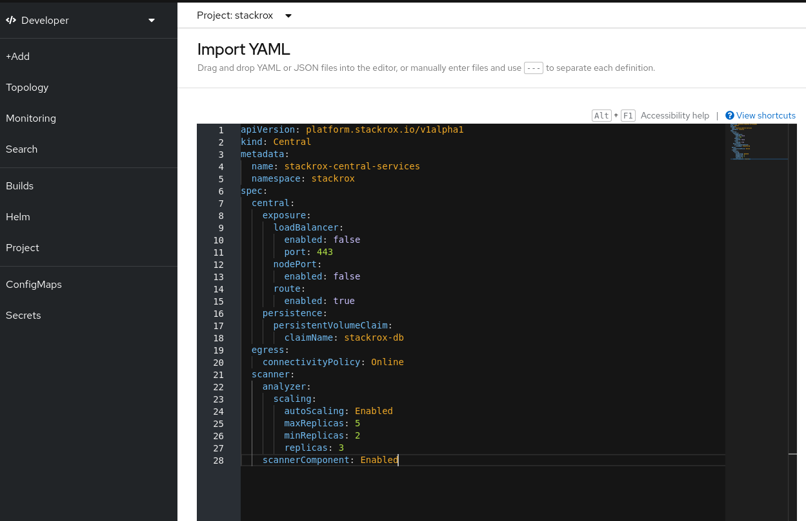
OC client(CLI) の利用
-
このリポジトリで提供されているテンプレートファイルを使用して、
centralのカスタムリソースを作成します。oc apply -f stackrox-central-services.yaml -n stackrox -
watch オプションを使用してインストールを監視します。
oc get pods -n stackrox -w
RHACS ログイン
-
インストールが完了したら、以下のようにコマンドラインから、またはWebコンソールから
Topologyビューを使用して、生成されたルートのホスト名を抽出します。oc get routes/central -n stackrox -o jsonpath='{.spec.host}' -
https://<route_hostname>; にログインします。 usernameは
adminpasswordはstackroxを使用します。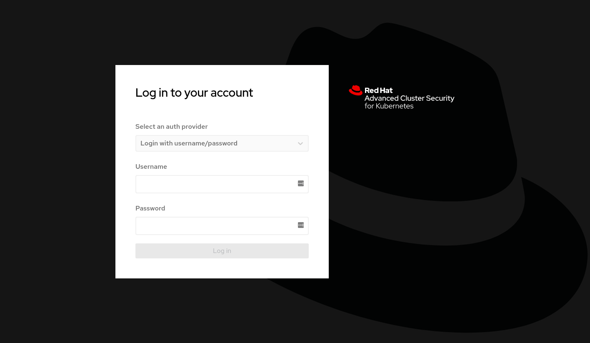
RHACS Secured Cluster の構成
ACSにクラスタをインポートするには、Sensor、Collectors、Admission ControllersのTLSシークレットを含む Cluster init bundle を生成する必要があります。
RHACSポータルを利用した init bundle の生成
-
Platform Configuration
セクションのIntegration`` サブセクションにアクセスして、cluster init bundle を生成します。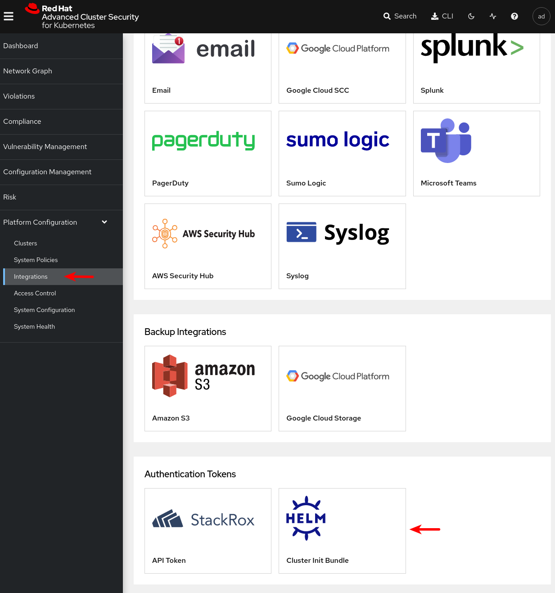 -
クラスタ名を指定して bundle を生成します (ここでは
demo-cluster)。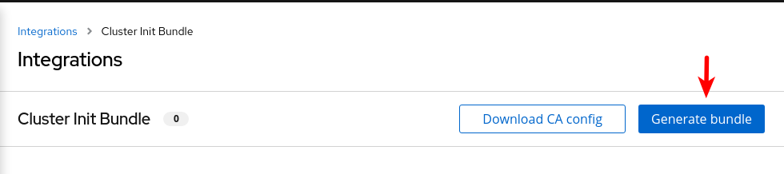 -
cluster init bundle secretをダウンロードします。
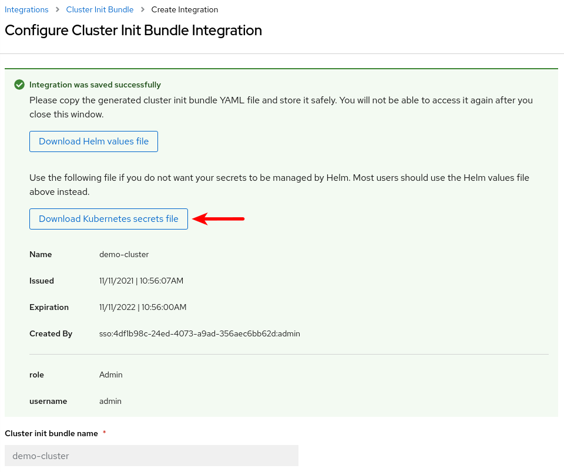 -
ターゲットのセキュアなクラスターにcluster init bundle secretを適用します。
oc apply -f ~/Downloads/demo-cluster-cluster-init-secrets.yaml -n stackroxyaml ファイルを開いて内容をコピーし、+Add → Import YAML ショートカットを使ってウェブコンソールに貼り付けることができます。あなたは
cluster-adminで、すべてのオブジェクトにnamespaceキーが設定されているので、Webコンソールで選択した project（すべてのprojectなど）に関係なく、それぞれの namespace にすべてのオブジェクトを作成することができます。
セキュア クラスタ サービスのインストール
| このワークショップでは、Central clusterとsecured clusterとして同じクラスタを使用します。実際のシナリオでは、多くの異なるsecured clusterが存在することになります。SecuredCluster CRを管理するために、すべてのsecured cluster にACS Operatorをインストールしてください。 |
SecuredCluster のカスタムリソースは非常にシンプルです。以下の例では、 demo-cluster をターゲットとした設定を示しています。collector の設定に注目してください。コレクションメソッドは EBPF に設定されています。別の収集方法としては、 KernelModule があります。TolerateTaints`` により、Collector デーモンセットを ODF ノードのような特別なテイントを持つノードにもデプロイすることができます。
apiVersion: platform.stackrox.io/v1alpha1
kind: SecuredCluster
metadata:
name: stackrox-secured-cluster-services
namespace: stackrox
spec:
admissionControl:
listenOnCreates: true
listenOnEvents: true
listenOnUpdates: true
clusterName: demo-cluster
perNode:
collector:
collection: EBPF
imageFlavor: Regular
taintToleration: TolerateTaints| 詳しくは、https://docs.openshift.com/acs/installing/install-ocp-operator.html#addmission-controller-settings_install-ocp-operator[SecuredCluster operator documentation]の設定を確認してください。 |
-
リポジトリで提供されているサンプルを使用(オプションでカストマイズも可能)して、Secured Clusterカスタムリソースを作成します。
oc apply -f stackrox-secured-cluster-services.yaml -n stackroxまたは、Webコンソールを使用して、ACS オペレータビューで、次のようにします。
-
提供されているAPIセクションで、「Create Secured Cluster」を選択します。
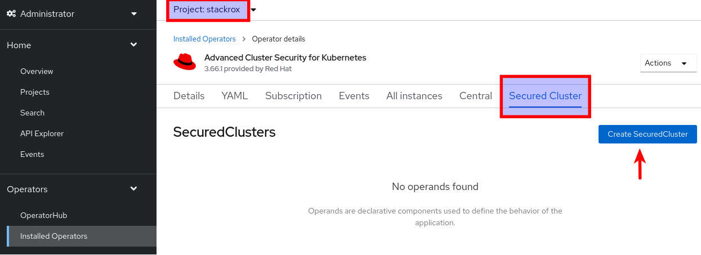 -
そして、yamlの内容をコピー＆ペーストします。
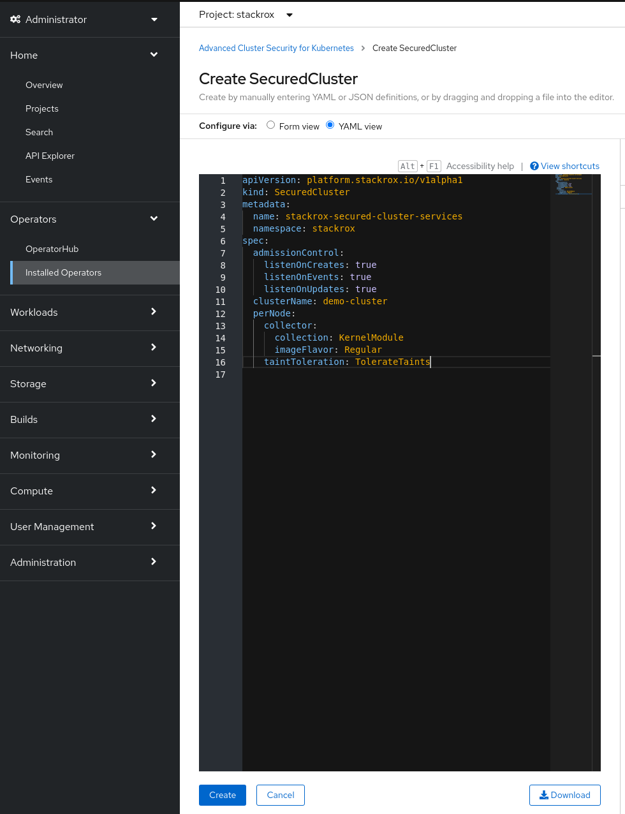
または、前のセクションと同様に、+Add → Import YAMLのパスを使用します。
-
-
watch オプションを使用してインストールを監視します (または、前述の
DeveloperパースペクティブからWebコンソールのTopologyビューを使用します)。oc get pods -n stackrox -w -
インストールが終了したら、central consoleに行き、secured cluster が正しく接続されていることを確認します。
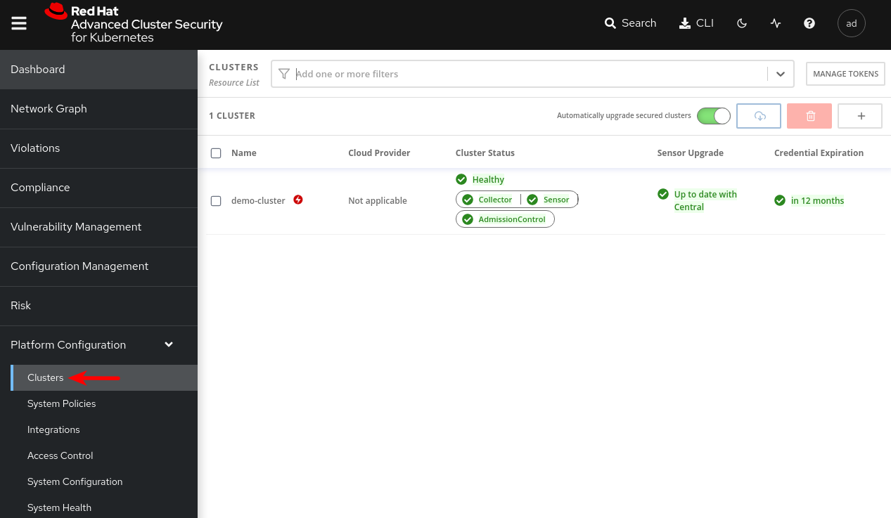
RHACS デモの展開 - 必須
| 使用したインストール オプションに関係なく、ACS デモをクラスタに展開する必要があります。 |
-
デモを含むレポをダウンロードします。
sudo dnf install -y ansible ansible-galaxy collection install kubernetes.core sudo pip3 install kubernetes openshift jmespath cd git clone https://github.com/rh-mobb/rhacs-demo cd rhacs-demo -
ansible デモをクラスターに適用します。
Playbook を実行する前に、OpenShift クラスターにログインする必要があります。 ansible-playbook rhacs-demo.yaml -e stackrox_central_admin_password=stackrox -
Playbook の実行後 (すべてが正常に機能した場合)、出力は次のようになります。
TASK [ocp4_deploy_acs_demo_apps : Lock baselines] **************************************************************************************** ok: [localhost] => (item=visa-processor) ok: [localhost] => (item=backend-atlas) ok: [localhost] => (item=asset-cache) PLAY RECAP ******************************************************************************************************************************* localhost : ok=35 changed=3 unreachable=0 failed=0 skipped=0 rescued=0 ignored=0
アプリのデプロイ - オプション
残りのセクション (デモの展開に基づく) に従う予定がなく、プレイして独自の発見をしたい場合は、以下の手順に従ってください。
-
重大な脆弱性があるいくつかのアプリケーションを開始します。
oc new-project testoc run shell --labels=app=shellshock,team=test-team \ --image=vulnerables/cve-2014-6271 -n testoc run samba --labels=app=rce \ --image=vulnerables/cve-2017-7494 -n test -
RHACS ポータルに移動して、違反を表示します。